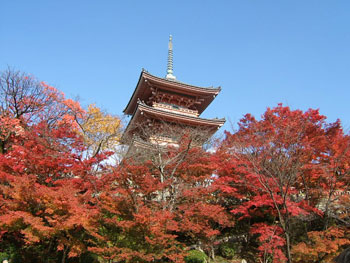
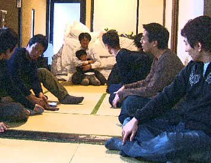
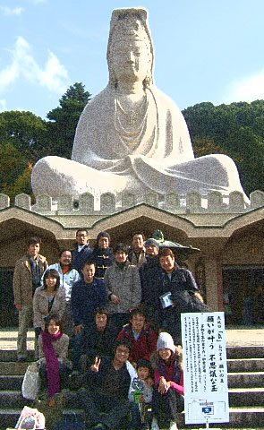
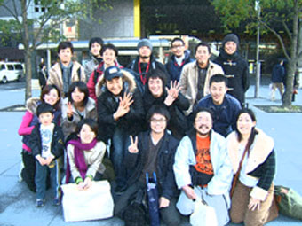

« 臨時休業のおしらせ | メイン | あ なたに見せたいものがあるんだ »
2006年12月01日
修学旅行に行っていました。

東京・神奈川・大阪・京都・岡山・愛知・徳島と、技術や考えは違えども、志を同じくする仲間が総勢18人集まって、修学旅行と勉強会を京都にて行い ました。
わたしは皆さまのご厚意に甘えて息子連れで参加しました。

子ども同士ではなかなかしんどいことも多い（らしい）息子も、オトナたちに混じり、わやわやと…。
兄さんたちに手を引かれ銭湯で男同士、なにやらよからぬことをぐふぐふ話したり、腰に手を当てて牛乳を飲んでひげを作ったりと楽しんでいた様子。
息子を寝かしつけてからも深夜まで整体・経営談義に花が咲き、デモンストレーションをうけ…。
「３日後！」の言葉通り、わたくし帰ってきてから昨日まで、たまった仕事でろくに寝ていないにもかかわらず、恐ろしいくらい肌がぴちぴちになり、しこって
いた右の腸骨前の筋肉がしっくりゆるんで動きがスムーズにになり、足の指先のかさつきが全部消えてました…。
「その家の長男を生かすために編み出された日本古来の整体」おそるべし。

翌日は、高台寺さんへ坐禅体験。
わたしは息子連れなので失礼して境内で池の鯉にえさをあげたり、お札を納めたりしていました。
みなさん、くちぐちに「これぞまさに整体！」と。
坐とは、『土の上に人と人とが向かい合う、これは他人ではなく自分である』（すいません、しつれいなはしょり方で）という、お寺さんのお話があった らしい。
内なる自分と向き合うこと。
うん、それはまさに整体。
とてもいい体験をされたようです。終えた後のみなさん、とてもええ顔やった。
わたしもやりたかった！

清水寺などをまわり、京都駅にて。
新幹線を見がてら関東組のみなさんをお見送りしました。
背中を指で触れると首がまわるようになったり、呼吸が深くなったり、あごや耳を触れると腕があがるようになったり、目線誘導で屈曲のポジションが変わると
いう、理屈はわからないが経験則で施術に使っていたことがあれもこれもとつながりだして、とても楽しい勉強会でした。
もっと、感じればいいんだ、感じたことをありのまま認めればいいんだということが改めて腑に落ちたというか、そんなすっきり感でした。
年末まで、もうひとがんばりできそうです。
いつも見守っていただきありがとうございます。
投稿者 あつこ : 2006年12月01日 17:29
トラックバック
このエントリーのトラックバックURL:
http://tsuruga.xsrv.jp/mt/mt-tb.cgi/525
コメント
お疲れ様でした。
のぞみ先生に見とれてぽーっとしてました。
息子くん、一緒に遊んでくれてありがとう。
「ぼく、おんなのこはだいすき～」って言われてクラッときたじゃないか！！
またいつか、女子をシビれさせる名言を聞きたいものです…。
投稿者 とおやま : 2006年12月04日 15:42
のぞみ先生、こんにちは。
お手紙ありがとうございました。
いつも丁寧で面白いお手紙をいただきありがとうございます～。
プラチナオ～ラ出てました？
おかしいな～抑えたつもりだったんだけど(^-^)
僕の方もしっかり子供の相手をしているのぞみ先生をみて、偉大な母の愛を感じました。
ん～なんだか心がほんわかしました。
また、お会いできるのを楽しみにしてます！
柊馬くんにもよろしくお伝え下さいね。
投稿者 プラチナM（L） : 2006年12月04日 17:27
とおやまさん。
この度はお世話になりました～。
いっぱい手をつないでくれてありがとう。
最後の食堂で、寝起きに機嫌悪く「そば！」「そば！」とぐずってようやく落ち着きだしたと思ったのに、後から入ってきた近くの席のおじさんのところ に「はい茶そばおまちどうさん～」てやってきて、一瞬空気がかたまったのが笑えましたね。
お騒がせしました。
おんなのこだいすき…てそんなことぬかしてましたか…ああ…ああ…（発汗しつつ赤面）。
投稿者 のぞみ。 : 2006年12月05日 09:44
プラチナとも院長、先日はありがとうございました！大変お騒がせしました。
あの男子大所帯で行った銭湯は、とても印象深かったようですよ。
あの旅行を経て、息子はなんだかすこし落ち着いたというか、成長の兆しを見せています。
またお会いしましょうね～
投稿者 のぞみ。 : 2006年12月05日 09:48